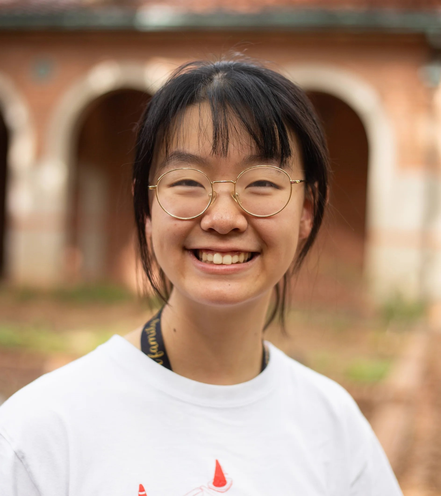

Projects
A logistic regression machine learning model to predict the development of acute
kidney injury (AKI) 24-72 hours after heart surgery.
Github here.
Sprout
A mental health app based on positive psychology.
A better When2Meet with a stronger user interface and more
optimal scheduling using mixed-integer linear programming.
RiceApps
An app to track positive/negative behaviors among students at
the Texas Hearing Institute!
2 apps to help dancers manage attendence & ticket sales for Rice Dance Theater events.
Wiess college @ Rice University website! I am webmaster.
Helloooooo, my name is Faith Zhang!

Hello! I'm a student at Rice University
studying Operations Research & Computer Science.
Most recently, I was awarded
the Summmer Undergraduate Research Fellowship @ Rice last summer 2024,
and I worked with the Department of Statistics to build a ML model.
I'm currently seeking SWE + DS + PM + UI/UX roles (really a swiss army knife here). A brief summary of my life
is detailed below :D
Rice
2023 -> 2026
- worked & researched at several places
- discovered STEM
- built my first app!
- conducted my first user survey!
- survived data structures & algorithms... barely
- make lattes as a KOC @ Rice Coffeehouse
- optimization problems @ Rice INFORMS
- draw monthly chalkboard art @ Wiess residential college
- served as an O-Week advisor
- dressed up for halloween for the first time in 7 years
- picked up photography, ui/ux design, project management, &
- flip flopped between impostor syndrome and a superiority complex, but on average, gave everything my best shot!
Adolescence
2019 -> 2023
- almost followed the professional violinist route
- had an incredible time playing chamber music with the La Vida Quartet
- won 3 gold & 2 silver bids to the national PF Debate Tournament of Champions
- served as an art director for 3 separate literary magazines
- maybe should've lived a little (?), but loved being involved
- made some lifelong friendships
- drew a lot of anime fan art
Sentience -> 8th Grade
2004 -> 2019
- generally unaware of the concept of locking in
- moved from Arkansas -> Maryland @ age 8
- nigahiga & winx club season 2 episode 3 part 1 YouTube video enjoyer
Did someone say UI/UX?!
Although I spend a lot of time developing, I also love to design! I serve as an
executive officer @ Rice Design, Rice University's one and only premier design club.
Because Rice doesn't have a strong support system for design resources, Rice Design provides
workshops, coffee chats, portfolio reviews, and even a semester-long consulting program
to help students interested in UI/UX (and design in general) receive the support they need.
If you're interested in seeing my person design work, you can check out my entirely separate
design portfolio HERE!